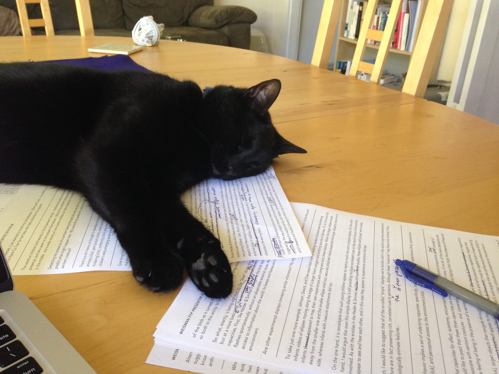

Here are some of the projects I'm actively working on:

Collaborators: Carol Dweck, Ellen Markman
Questions: How do we know when we're in the presence of a sentient creature? What kinds of capacities or properties do we expect sentient creatures to have, or not to have? How does the detection of sentience affect the way we reason about or interact with target objects in the world? How might concepts of sentience differ depending on individuals's immediate goals, their age, or their cultural or educational experiences?
Collaborators: Caitie Handron, Hazel Markus, David McClure, Erica Yoon
Questions: What information do picture books present about what it means to be a person, in a given cultural setting? What kinds of entities are featured as characters? What kinds of relationships are depicted among characters, and between characters and their social and ecological contexts? How might authors, illustrators, parents, and teachers communicate culture-specific conceptualizations of personhood through the books they produce for and read to children?
All collaborators are listed in alphabetical order.